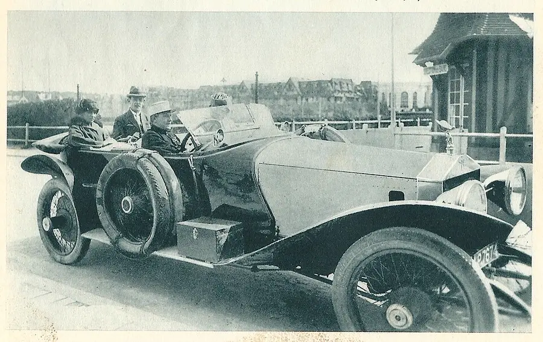
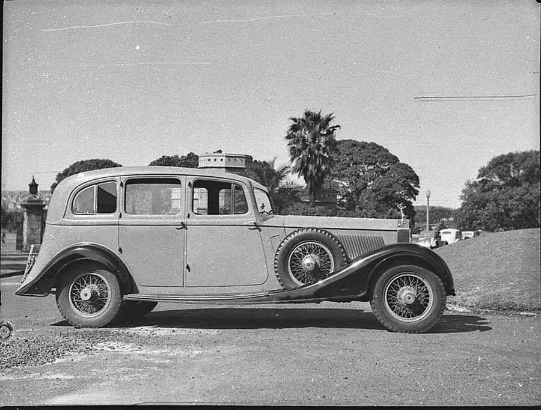
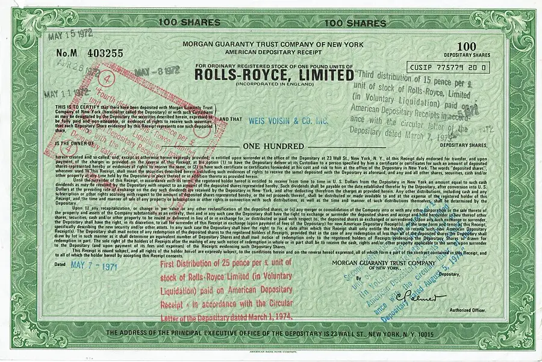

대표 로고대표 브랜드 마크
대표 로고대표 브랜드 마크롤스로이스 리미티드 Rolls-Royce Limited
롤스로이스 리미티드(Rolls-Royce Limited)는 1904년 맨체스터에서 Charles Rolls와 Henry Royce의 협력으로 설립된 영국의 고급 자동차 및 항공기 엔진 제조 기업이다.
최종 업데이트
롤스로이스 리미티드는 어떤 브랜드인가
롤스로이스 리미티드는 영국의 고급 자동차 제조사로 출발해 이후 항공기 엔진 제조로 사업을 넓힌 기업이다. Henry Royce가 크레인으로 쌓은 명성을 바탕으로, 두 창업자는 고급 자동차 제조를 통해 뛰어난 엔지니어링이라는 평판을 빠르게 얻었다.
1906년 Rolls-Royce Limited라는 이름으로 법인화했고 1908년 더비에 새 공장을 열었다. 제1차 세계대전을 계기로 항공기 엔진을 만들기 시작했으며, 제트 엔진 공동 개발은 1940년에 시작되어 1944년 생산에 들어갔다.
1971년 소유주들이 사업을 청산해야 했고, 이후 정부 소유 회사가 핵심 사업을 이어받았다. 현재 주된 사업은 Rolls-Royce plc가 보유하고 운영한다.
롤스로이스 리미티드는 어떻게 시작되고 성장했나
Henry Royce는 1884년 맨체스터에서 전기·기계 사업을 시작했다. 불황과 경쟁으로 회사가 어려워지자 자동차 제조로 사업을 넓힐지 가늠하기 위해 10 hp 실험 설계 자동차 세 대를 만들었다.
세 번째 차를 산 Henry Edmunds의 주선으로 Charles Rolls와 Royce가 1904년 5월 4일 맨체스터의 Midland Hotel에서 만났다. Rolls는 Royce 10에 깊은 인상을 받아 1904년 12월 23일 Royce가 만들 수 있는 모든 차를 가져가기로 합의했다.
모든 차는 Rolls-Royce 배지를 달고 Rolls가 독점 판매하기로 했다.
롤스로이스 리미티드의 브랜드 아이덴티티는 무엇인가
Charles Rolls와 Henry Royce의 협력으로 고급 자동차에서 출발해 항공기 엔진으로 사업을 넓혔고, 1971년 청산과 1987년 민영화를 겪은 영국 기업이다.
롤스로이스 리미티드의 대표 제품과 서비스는 무엇인가
초기 제품은 자동차였으며 10 hp 2기통, 15 hp 3기통, 20 hp 4기통, 30 hp 6기통의 네 가지 모델이 계획되었다. 이 차들은 엔진, 기어박스, 트랜스미션을 갖춘 프레임 섀시 형태로 판매되었고, 고객이 직접 차체 제작사를 정했으며 런던의 Barker & Co.가 추천되었다.
완성차는 1949년 Silver Dawn을 선보이기 전까지 만들지 않았다. 제1차 세계대전 이후 항공기 엔진이 사업에 더해졌고, 제트 엔진은 1944년 생산에 들어갔다.
1960년대 후반 첨단 RB211 제트 엔진 개발이 부실하게 관리되어 비용 초과를 겪었으나 결국 큰 성공을 거두었다.
롤스로이스 리미티드는 지금 어떤 상태인가
국유화 상태였던 사업은 1987년 회사명을 Rolls-Royce plc로 바꾼 뒤 영국 정부가 주식 공모로 대중에 매각했다. Rolls-Royce plc는 지금도 주된 사업을 보유하고 운영하지만, 2003년부터는 기술적으로 상장 지주회사 Rolls-Royce Holdings plc의 자회사이다.
자동차 부문은 Rolls-Royce Motors Holdings Limited로 이전되어 1980년 Vickers에 매각되었다.
롤스로이스 리미티드 로고는 어떻게 변해왔나
대표 로고대표 브랜드 마크사진으로 보는 롤스로이스 리미티드의 역사



자주 묻는 질문
롤스로이스 리미티드는 어느 나라 브랜드인가요?
롤스로이스 리미티드는 영국의 모빌리티 브랜드입니다.
롤스로이스 리미티드는 언제 설립되었나요?
롤스로이스 리미티드는 1906년 설립되었습니다.
롤스로이스 리미티드의 브랜드 아이덴티티는 무엇인가요?
Charles Rolls와 Henry Royce의 협력으로 고급 자동차에서 출발해 항공기 엔진으로 사업을 넓혔고, 1971년 청산과 1987년 민영화를 겪은 영국 기업이다.
롤스로이스 리미티드의 대표 제품은 무엇인가요?
초기 제품은 자동차였으며 10 hp 2기통, 15 hp 3기통, 20 hp 4기통, 30 hp 6기통의 네 가지 모델이 계획되었다.
롤스로이스 리미티드는 현재 어떤 상태인가요?
국유화 상태였던 사업은 1987년 회사명을 Rolls-Royce plc로 바꾼 뒤 영국 정부가 주식 공모로 대중에 매각했다.
롤스로이스 리미티드의 창업자는 누구인가요?
롤스로이스 리미티드의 창업자는 Charles Rolls, Henry Royce입니다(위키데이터 기준).
롤스로이스 리미티드의 본사는 어디에 있나요?
롤스로이스 리미티드의 본사는 더비에 있습니다(위키데이터 기준).
출처와 검증
롤스로이스 리미티드 관련 참고: 공식 웹사이트 · 위키데이터 Q679888 · 한국어 위키백과 · 영어 위키백과. 브랜드명은 한글과 원어를 함께 표기하되 데이터에 없는 표기는 만들지 않습니다. 기원 국가·설립연도는 검수된 정의문에서 확인된 값을 우선하고, 없을 때만 공식 웹사이트 URL이 일치하는 위키데이터 개체의 값을 씁니다. 탄생일의 월·일은 위키데이터, 위키백과 정보상자, 본문 가운데 같은 연월로 확인되는 값만 싣고, 출처끼리 다르면 싣지 않습니다. 위키데이터 값은 2026-11-12 기준입니다.